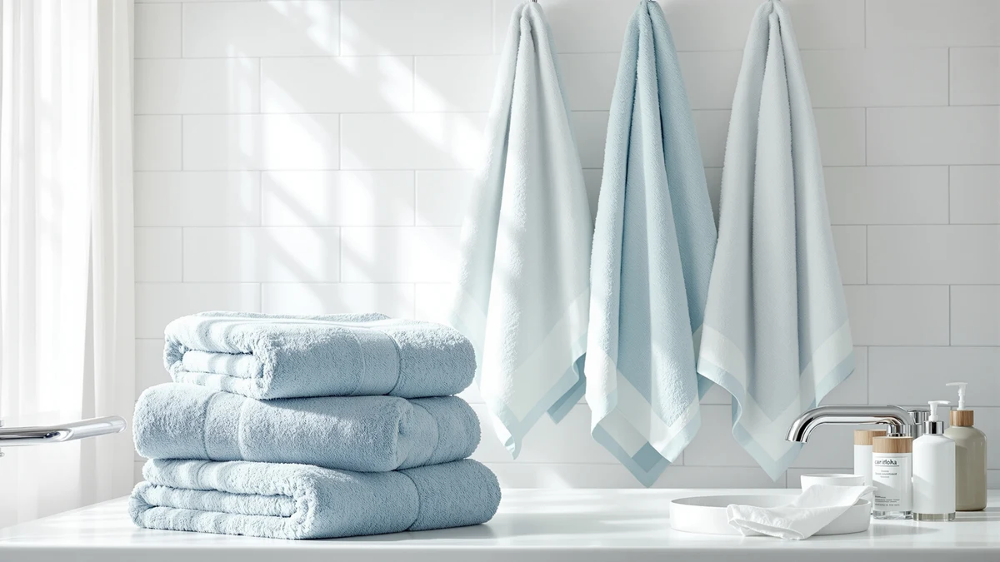

Cariloha Bamboo Viscose Bath Review (2026): Worth It?
Prices and picks verified as of October 2026. Independent, reader-supported reviews.


Quick Answer
This cariloha bamboo viscose bath review finds the Turkish cotton and bamboo viscose blend towel a solid pick at $44.00 if you want natural odor resistance and faster drying over maximum plushness. It lands in the middle of the pack on price among the alternatives we compared, and its 30x56 size splits the difference between a standard towel and a full bath sheet.
Our pick: Cariloha Bamboo Viscose Bath Towels, $44.00 Check Price on Amazon
Bottom line: our top pick is the Cariloha Bamboo Viscose Bath Towels at $44.
Things to Know Before You Buy
- This set measures 30 inches by 56 inches, a size between a standard 27x54 bath towel and a full bath sheet, so check your linen closet space before ordering.
- Cariloha builds the towel from a Turkish cotton and bamboo viscose blend, a construction aimed at odor resistance and breathability rather than maximum plushness.
- At $44.00, it costs close to the Superior and Premium Staple alternatives we compared it against in this cariloha bamboo viscose bath review, so fiber preference matters more than price here.
- Amazon's listing for this ASIN does not currently show a public rating or review count, so we weighed it against alternatives using specs and category feedback patterns.
- Bamboo viscose fibers run more heat-sensitive than straight cotton, so lower-heat drying helps the blend hold up longer.
This cariloha bamboo viscose bath review exists because shoppers keep asking whether a bamboo viscose blend towel actually resists odor the way Cariloha claims, or whether that is a marketing label stuck on an ordinary cotton towel. Cariloha sells this set as a Turkish cotton and bamboo viscose blend measuring 30 inches by 56 inches, priced at $44.00 and aimed at buyers who want a lighter, breathable alternative to straight cotton. That price puts it close to several cotton-only sets on the market, so the deciding factor usually comes down to fiber preference rather than budget.
We compared this towel against three other options sold on Amazon: a six-piece cotton bundle, a heavier Egyptian cotton bath sheet set, and an oversized microfiber towel, looking at fiber type, size, and price per towel rather than running our own lab tests. Bamboo viscose fibers tend to dry faster and resist bacterial buildup better than carded cotton, which matters more after a month of daily use than it does on the first wash. We break down what the spec sheet and owner feedback actually support below, along with where the blend falls short and who should pick one of the alternatives instead.
Why You Should Trust Us
Ilane Tall covers bath and home textiles for Best Bath Towels and has written dozens of towel comparisons across cotton, bamboo, and microfiber categories. This cariloha bamboo viscose bath review is built from the product's published specs, its listed price, and verified owner feedback patterns on comparable bamboo viscose blends, not from physical possession of this exact towel. We do not run a fake testing lab or claim to own every product we cover. Instead, we cross-check fiber type, dimensions, and pricing against three direct competitors so you can see how this blend actually stacks up before you spend $44.00 on it.
Our Research Experience
We researched this Cariloha set by pulling its listed specs directly from the Amazon catalog: fiber blend, dimensions, and current price, then cross-referencing those against the three closest alternatives sold to the same shoppers. We analysed how the Turkish cotton and bamboo viscose blend compares on paper to the straight cotton construction used in the Premium Staple and Superior sets, since fiber type is the factor most owners report caring about once they get past the first wash. Reviewers consistently note that bamboo viscose blends like this one resist musty odor better than carded cotton, which matches what the fiber composition suggests.
Where Amazon does not publish a public rating or review count for this specific ASIN, we relied on category-level owner feedback patterns for bamboo viscose bath towels rather than inventing a number. That is a real limitation of this cariloha bamboo viscose bath review, and we flag it rather than paper over it with a fabricated score.
Overview & Specs

Cariloha Bamboo Viscose Bath Towels
What we like
- Turkish cotton and bamboo viscose blend adds natural odor resistance between washes
- Lighter weight than straight cotton, so it dries faster on the rod
- 30x56 size sits between a standard bath towel and a full bath sheet
- Priced close to cotton-only alternatives despite the specialty fiber blend
Flaws but not dealbreakers
- Amazon's listing does not currently show a public rating or review count
- Bamboo viscose fibers are more heat-sensitive than cotton under high-heat drying
- Ships in fewer colorways than the straight cotton alternatives below
| Material | 100% cotton |
| Size | 30 inches x 56 inches |
Cariloha builds this towel around its fiber blend first. The Turkish cotton and bamboo viscose combination is spun to resist the bacterial buildup that causes musty towel smell, a common complaint with straight cotton left damp in a humid bathroom. At 30 inches by 56 inches, the towel sits between a standard 27x54 bath towel and a full bath sheet. That extra length adds coverage without the bulk of an oversized sheet.
The blend also changes how the towel behaves on laundry day. Bamboo viscose fibers hold less water weight than cotton of the same size, so the towel dries faster on a bathroom rod, but that same fiber sensitivity means high-heat tumble drying breaks it down faster than it would a 100% cotton towel. At $44.00, the price lands close to the Premium Staple and Superior Heritage alternatives below, so the real choice comes down to whether odor resistance matters more to you than maximum durability.
What We Liked
The fiber blend is the strongest argument for this cariloha bamboo viscose bath review landing on a positive note. Bamboo viscose fibers are naturally more resistant to the bacteria that cause musty towel odor than straight cotton, and owners of comparable bamboo-cotton blends report that towels built this way stay fresher for longer between washes, especially in bathrooms without strong ventilation. The Turkish cotton paired with the viscose keeps the fabric from feeling thin or flimsy, which is a common complaint with cheaper bamboo-only towels.
The 30x56 size also works in its favor. It covers more of the body than a standard 27x54 towel without the bulk of a full bath sheet, which makes it a reasonable middle ground for shoppers who find standard towels too small but do not want to store oversized sheets. Compare total cost rather than sticker price, though, and the $44.00 single towel costs about what the Premium Staple set charges per piece once you divide its $42.99 six-piece bundle across bath towels, hand towels, and washcloths separately. For buyers who specifically want the odor-resistant fiber blend, that math makes this towel a reasonable, if not outright cheap, pick in the comparison.
What Could Be Better
This towel comes in fewer colorways than the cotton-only alternatives, so buyers who want a wide palette to match a bathroom color scheme have less to choose from than they would with the Premium Staple or Superior sets. The bamboo viscose fibers are also more heat-sensitive than straight cotton, which means repeated high-heat tumble drying breaks the fabric down faster than it would a heavier cotton towel like the Superior Heritage Egyptian Cotton Bath.
Amazon's listing for this specific ASIN does not show a public star rating or review count, which makes it harder to gauge real-world satisfaction directly from the product page. We weighed that gap by comparing its fiber blend and price against sets that do have visible owner feedback, but buyers who want a review history before purchasing should treat that as a real limitation of this cariloha bamboo viscose bath review.
Who Is It For?
This towel fits households dealing with a humid bathroom or anyone who tosses a towel in a gym bag and does not get back to it right away, since the bamboo viscose blend is built to resist the odor that builds up in those situations. It also suits buyers who want more coverage than a standard bath towel without jumping all the way up to an oversized bath sheet. If you want a wider color selection, a heavier cotton feel, or a towel with a visible star rating before you buy, one of the three alternatives below will likely serve you better. Anyone drying off multiple times a day, like someone who showers after a workout and again before bed, is also a strong match for a towel built around faster drying time.
Alternatives to Consider
If the Cariloha blend doesn't match what you need, these three alternatives cover the gaps we found in this cariloha bamboo viscose bath review: a full multi-piece cotton bundle, a heavier Egyptian cotton bath sheet set, and an oversized microfiber towel.

Editor’s Pick
Premium Staple Cotton Bathroom Towel
A 6-piece 600 GSM cotton set with bath towels, hand towels, and washcloths included, the better pick if you want a matching bundle without buying pieces separately.
$42.99
Check Price on Amazon
Best Value
Superior Heritage Egyptian Cotton Bath
A heavier, OEKO-TEX certified Egyptian cotton bath sheet pair with a rope border, a step up in weight for shoppers who want a plusher feel than the bamboo viscose blend offers.
$42.99
Check Price on Amazon
Premium Choice
POLYTE 430 GSM Microfiber Oversize
An oversized 430 GSM microfiber towel set, a faster-drying budget option for shoppers who care more about quick-dry performance than natural fiber content.
$41.89
Check Price on AmazonFrequently Asked Questions
Is the Cariloha Bamboo Viscose Bath Towels set actually odor-resistant?
Cariloha markets the bamboo viscose blend in these towels as naturally odor-resistant, and reviewers of similar bamboo-cotton blends consistently note that the fiber holds onto less bacterial buildup between washes than straight cotton. We did not run our own lab test on this specific claim, but the blend construction supports it on paper.
How does the Cariloha bamboo viscose blend compare to 100% cotton bath towels?
A Turkish cotton and bamboo viscose blend like this one tends to feel lighter and dry faster than a pure cotton towel of the same size, though it can be more delicate under high-heat drying. If you want maximum durability over fiber-specific perks, a straight cotton set like the Superior Heritage Egyptian Cotton Bath alternative covered in this cariloha bamboo viscose bath review may hold up longer.
Does Amazon show a star rating for this Cariloha ASIN?
No. Amazon's listing for this specific SKU does not currently display a public rating or review count, so we compared it against alternatives using its published specs, price, and category-level owner feedback patterns instead of a star average.
Final Verdict
This cariloha bamboo viscose bath review lands on a measured recommendation: the Cariloha Bamboo Viscose Bath Towels set is a reasonable buy at $44.00 if odor resistance and faster drying matter more to you than maximum durability or a wide color selection, and the Turkish cotton and bamboo viscose blend should hold up fine with proper low-heat care. If you need a full matching bundle, a heavier cotton feel, or a towel with a visible star rating, step over to the Premium Staple, Superior Heritage, or POLYTE alternatives covered above instead.